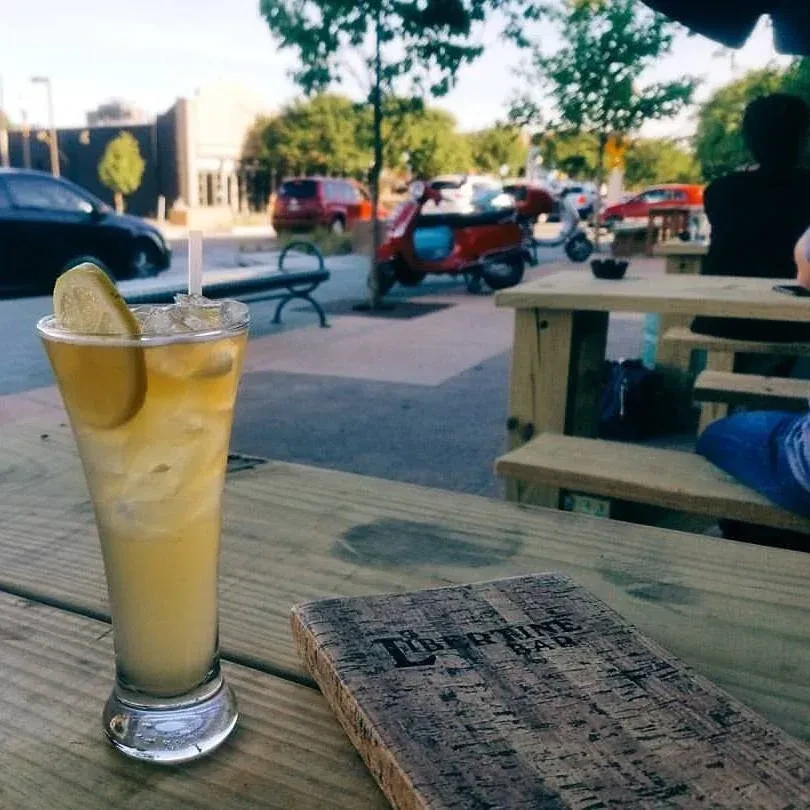

#1

The Libertine Bar
Half-Price Wine Bottles & $5 Frozen Margs, Tue-Fri
2101 Greenville Ave · Lower Greenville
Half-price wine bottles four nights a week, $5 frozen margs, $5 cocktails (Paloma, Old Fashioned, Dark 'n Stormy), plus a Tuesday $20 steak-and-cocktail night. The Lower Greenville bar has been doing real-deal happy hour since 2007 and the value math still doesn't add up anywhere else on the strip.
Tue-Fri, 4-7pm
- Half-price wine bottles
- $5 frozen margaritas
- $5 cocktails: Paloma, Old Fashioned, Sangria, Dark 'n Stormy, Carajillo
- $3 kettle chips with onion dip
+ 3 more deals
Tue, 4-10pm
- $20 steak or burger with cocktail (Absolut Martini, TX Old Fashioned, or Altos Paloma)
Sat brunch, 11am-3pm
- $10 birria tacos (house-made beef birria, onions, cilantro)
Sun brunch, 11am-3pm
- $5 frozen margaritas · $4 champagne drinks · $6 bloody marys